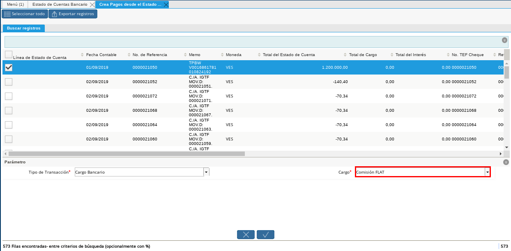
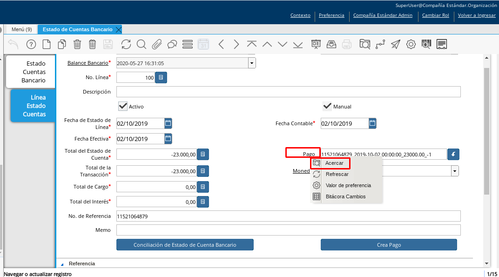
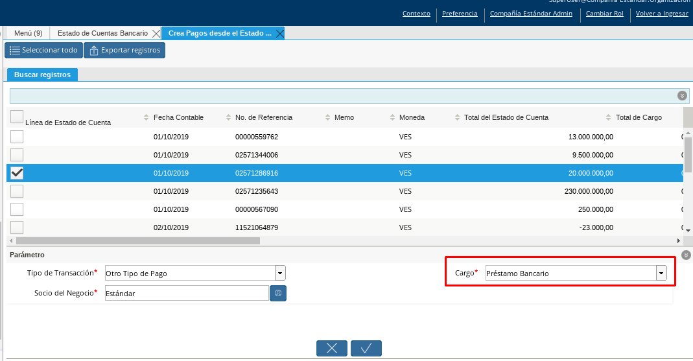
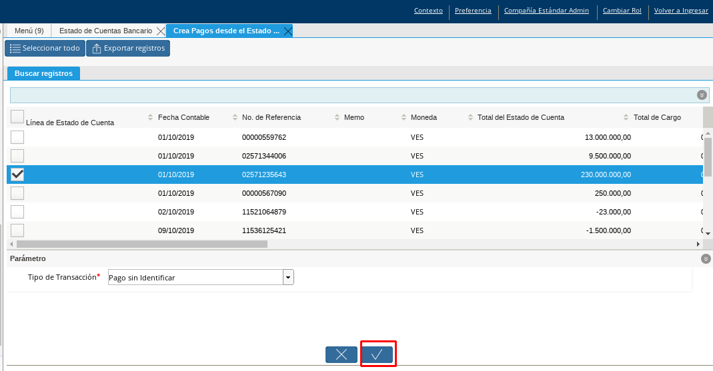
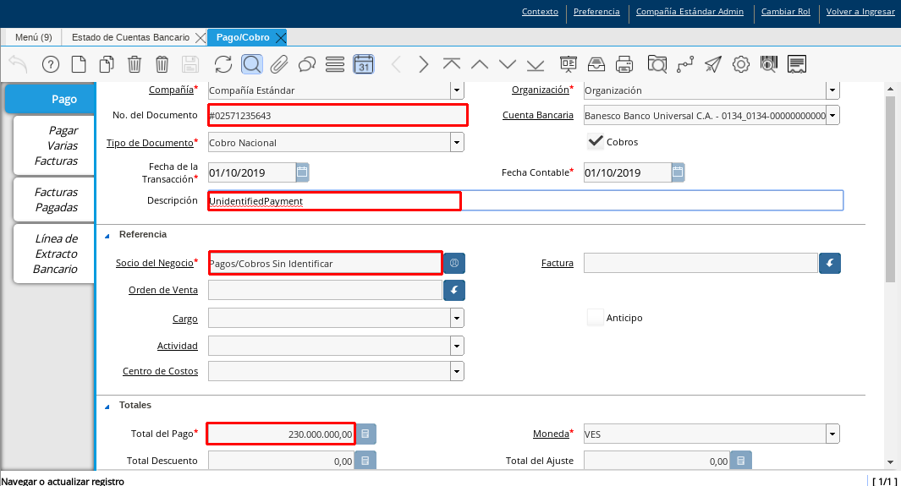

Crear Pagos desde Estado de Cuenta¶
El proceso ”Crear Pagos desde Estado de Cuenta” es realizado por consecuencia de la existencia de ”Pagos/Cobros” que se encuentran en el extracto bancario y al momento de la conciliación no se encuentra ninguna coincidencia con los movimientos registrados en ADempiere; el mismo parte del proceso de conciliación automática donde al importar el extracto bancario verifica los movimientos registrado en ADempiere, este realiza una verificación de coincidencias de ”Pagos/Cobros” en ambos lados (Movimientos del extracto / Movimientos en ADempiere), mayormente se encuentran muchos movimientos en el extracto bancario que no han sido registrados en ADempiere y no solo es por que no se lleve un buen control de los registros si no que los extractos bancarios poseen detalladamente otros tipo de transacciones como comisiones bancarias que en algunos casos no son registrados en ADempiere o poseen movimientos bancarios que se desconoce su procedencia, pero para este tipo de casos se encuentra el proceso ”Crear Pagos desde Estado de Cuenta”, ya que es muy importante que todos los movimientos bancarios coincidan en su totalidad con los registros en ADempiere o que los mismos logren ser identificados, ya que de lo contrario la conciliación no podrá ser completada en ADempiere.
El presente material elaborado por ERPyA pretende ofrecerle una explicación eficiente a nuestros clientes del procedimiento a seguir para la creación de pagos y cobros sin registros en ADempiere, partiendo desde el proceso de Conciliación Automática registro de pagos / cobros existentes en el extracto bancario importado, obteniendo un resultado exitoso al momento de conciliación de cuentas en la versión 3.9.2 de ADempiere en la localización Venezuela.
Pagos/Cobros sin Registros¶
Los pagos o cobros sin registro en ADempiere pueden presentarse en las empresas por diferentes motivos los cuales pueden ser que no fueron registrados a tiempo o correctamente, o la cuenta bancaria a recibido un cobro por adelantado y este no ha sido notificado al personal que lleva los registros de los pagos/cobros en ADempiere, el registro de los mismos puede realizarse de tres formas explicadas a continuación.
Luego de realizar el proceso de conciliación, ubique la pestaña “Línea Estado Cuentas”.
Imagen 1. Pestaña Estado Cuentas para Pagos Cobros sin Registros

Seleccione el icono “Proceso”, en la barra de herramientas de ADempiere.
Imagen 2. Icono Proceso para Pagos Cobros sin Registros

Seleccione la opción “Crear Pago desde Estado de Cuenta”.
Imagen 3. Opción Crear Pago desde Estado de Cuenta
Podrá visualizar la siguiente ventana de búsqueda inteligente con los “Pagos/Cobros” que no tuvieron coincidencias al momento de conciliar.
Imagen 4. Ventana de Búsqueda Inteligente


Note
“Hasta este punto solo se puede visualizar los movimientos bancarios sin conciliar, pero la mayoría de estos movimientos bancarios pertenecen a otros tipos de transacciones como lo son los “Cargos Bancarios”, “Otro Tipo de Pagos” y los “Pagos sin Identificar”, estas transacciones bancarias deben ser identificadas para poder completar la conciliación bancaria”.
Pagos o Cobros de Comisiones¶
Para aquellos movimientos que pertenezcan a comisiones bancarias estos deben ser asociados al tipo de transacción “Cargos Bancarios”, ya estando dentro de la opción “Crear Pago desde Estado de Cuenta” se debe realizar los siguientes pasos.
En la ventana de búsqueda inteligente de “Crear Pago desde Estado de Cuenta” seleccione el o los pagos/cobros correspondientes a las comisiones.
Imagen 5. Selección de Pagos/Cobros
Seleccione en el campo “Tipo de Transacción” la opción “Cargo Bancario”.
Imagen 6. Opción Cargo Bancario del Campo Tipo de Transacción
Seleccione en el campo “Cargo” el cargo de comisión correspondiente, para este ejemplo es “Comisión FLAT”.

Imagen 7. Campo Cargo


Seleccione la opción “OK” para generar automáticamente el documento de pago/cobro en ADempiere.
Imagen 8. Opción OK para Crear Pagos Cobros de Comisiones
Warning
Si ADempiere refleja el error “No encontrado Factura / Socio del Negocio”, es porque está buscando una factura asignada al pago/cobro o un socio del negocio asociado al banco y no existe registro de ello. En este caso, es necesario abrir registro del banco y seleccionar un socio del negocio.

Podrá visualizar el “Pago/Cobro” de cargos bancarios en la pestaña “Línea Estado de Cuentas”, como la pestaña cuenta con varios registros, esté puede ser ubicado por el monto del movimiento bancario. Al ubicar el registro esté debe contar con las siguientes características:
En el campo “Pago” debe tener asociado el número del documento del “Pago/Cobro” que se seleccionó al momento de aplicar el proceso “Cargo Bancario”.
Imagen 9. Campo Pago Comisiones
Note
El número de documento a mostrar en el campo “Pago” debe coincidir con el número que se muestra el campo “N° de Referencia” el cual es el número de la referencia bancaria de ese movimiento.
En el grupo de campos “Referencia” podrá visualizar lo siguiente:
En el campo “Socio de Negocio” debe aparecer el banco con el que se está trabajando la conciliación.
Imagen 10. Campo Socio Negocio Comisiones
Note
Para este caso el socio del negocio a mostrar es el banco “Banesco” por que es el banco con el que se está trabajando la conciliación, pero ese socio de negocio va a variar según el banco con el que esté trabajando la conciliación, sí está trabajando con el banco “Mercantil” tomará ese banco, si está trabajando la conciliación con el banco “Banesco” tomará “Banesco” y así sucesivamente.
En el campo “Cuenta Beneficiario TEF” debe aparecer “COMISIÓN TRF OTROS BCOS”.
Imagen 11. Campo Cuenta Beneficiario TEF
En el campo “Cantidad TEF” debe aparecer el mismo monto del movimiento bancario.
Imagen 12. Campo Cantidad TEF
Note
El monto que aparece en el campo “Cantidad TEF” debe ser el mismo monto que aparece en el campo “Total de la Transacción”.


Si desea verificar el registro del pago/cobro generado en ADempiere puede realizarlo tildando el campo “Pago” y lo llevará a la ventana “Pago/Cobro” de ADempiere.
Puede presionar click derecho y seleccionar la opción ”Acercar” y lo llevará a la ventana “Pago/Cobro” de ADempiere.

Imagen 13. Pago Acercar
Al encontrarse en la ventana “Pago/Cobro” puede observar que el registro contará con los mismos datos anteriormente mencionados que se encuentran en grupo de campos “Referencia”.
Imagen 14. Ventana Pago/Cobro

Otros Tipos de Pagos o Cobros¶
Para aquellos movimientos que se encuentran en el extracto bancario que al momento de realizar la conciliación no se asoció a ningún pago/cobro en ADempiere por qué no se encontraban registrados pero sí se conoce su procedencia se deben asociar al tipo de transacción “Otro tipo de Pago” ya estando dentro de la opción “Crear Pago desde Estado de Cuenta” se debe realizar los siguientes pasos.
Note
Para este caso se tomará como ejemplo un préstamo bancario, el cual el socio de negocio al que se le realizó el préstamo hizo un abono, en su momento esta transferencia no había sido notificada por ello no se realizó el registro del pago/cobro en ADempiere, pero como se sabe de dónde proviene ese movimiento bancario este entraría dentro de la tipo de transacción “Otro tipo de Pago”.
En la ventana de búsqueda inteligente “Crear Pago desde Estado de Cuenta” seleccione el o los pagos/cobros correspondientes a otros tipos de pagos.
Imagen 15. Selección de Pagos/Cobros

Seleccione en el campo “Tipo de Transacción” la opción “Otro Tipo de Pago”.
Imagen 16. Otro tipo de Pago

Seleccione el socio del negocio en el campo “Socio del Negocio”, para este ejemplo el socio a utilizar es “Estándar”.
Imagen 17. Socio de Negocio Otro Tipo de Pago
Note
Para este caso el socio de negocio es la persona que realizó la transferencia bancaria.

Seleccione en el campo “Cargo” el cargo correspondiente al pago/cobro,siguiendo el ejemplo anteriormente comentado el cargo a utilizar es “Préstamo Bancario”.

Imagen 18. Cargo Otro Tipo de Pago
Note
El cargo a utilizar dependerá del tipo de transacción que se esté registrando.
Seleccione la opción “OK” para generar automáticamente el documento de pago/cobro en ADempiere.
Imagen 19. OK Otro Tipo de Pago

Podrá visualizar el “Pago/Cobro” creado de “Otro Tipo de Pago” en la pestaña “Línea Estado de Cuentas”, como la pestaña cuenta con varios registros, esté puede ser ubicado por el monto del movimiento bancario. Al ubicar el registro esté debe contar con las siguientes características:
En el campo “Pago” debe tener asociado el número del documento del “Pago/Cobro” que se seleccionó al momento de aplicar el tipo de transacción “Otro Tipo de Pago”.
Imagen 20. Campo Pago Otro tipo de Pago
Note
El número de documento a mostrar en el campo “Pago” debe coincidir con el número que se muestra el campo “N° de Referencia” el cual es el número de la referencia bancaria de ese movimiento.
En el grupo de campos “Referencia” podrá visualizar lo siguiente:
En el campo “Socio de Negocio” debe aparecer el socio de negocio asociado al momento de aplicar el tipo de transacción “Otro Tipo de Pago”.
Imagen 21. Campo Socio Negocio Otro tipo de Pagos
En el campo “Referencia TEF” debe aparecer el número de referencia del movimiento bancario.
Imagen 22. Campo Referencia TEF
En el campo “Cantidad TEF” debe aparecer el mismo monto del movimiento bancario.
Imagen 23. Campo Cantidad TEF Otro tipo de Pagos
Note
El monto que aparece en el campo “Cantidad TEF” debe ser el mismo monto que aparece en el campo “Total de la Transacción”.


Si desea verificar el registro del pago/cobro generado en ADempiere puede realizarlo tildando el campo “Pago” y lo llevará a la ventana “Pago/Cobro” de ADempiere.
Puede presionar click derecho y seleccionar la opción “Acercar” y lo llevará a la ventana “Pago/Cobro” de ADempiere.
Imagen 24. Acercar Otro tipo de Pagos
Al encontrarse en la ventana “Pago/Cobro” puede observar que el registro contará con los mismos datos anteriormente mencionados que se encuentran en grupo de campos “Referencia”.
Imagen 25. Pago/Cobro Otro tipo de Pagos


Pagos o Cobros sin Identificar¶
Al momento de hacer la conciliaciòn bancaria la mayorìa de las veces suelen haber movimientos en el extracto bancario que se desconocen de donde provienen, y para ADempiere todos los movimiento que tiene el extracto bancario deben ser identificados o asociados a un “Pago/Cobro” ya que de no ser identificados ADempiere no permitirá completar la conciliación bancaria, el cual implica que dentro de ADempiere no se ha realizado ninguna conciliación.
Para los movimientos bancarios que se desconocen de dónde proviene, en ADempiere se llevan a pagos/cobros no identificados, para poder completar e identificar todos esos movimientos que posee el extracto bancario.
Note
Los “Pago/Cobro” que se pasen a ser no identificados, luego podrán ser identificados una vez se verifique su procedencia.
Para poder llevar estas transacciones bancarias a “Pagos o Cobros sin Identificar” ya estando dentro de la opción “Crear Pago desde Estado de Cuenta” se debe realizar los siguientes pasos.
Podrá observar la ventana de búsqueda inteligente donde se muestran todos los movimientos bancarios que no se les encontró una coincidencia al momento de hacer la conciliación automática.
Imagen 26. Movimientos Bancarios Pagos sin Identificar

Seleccione el o los “Pago/Cobro” con procedencia desconocida.
Imagen 27. Selección Pago sin Identificar

Seleccione en el campo “Tipo de Transacción” la opción “Pago Sin Identificar”.
Imagen 28. Pago Cobro sin Identificar

Seleccione la opción “OK” para generar automáticamente el documento de “Pago/Cobro” en ADempiere y esté pueda ser asociado con el movimiento bancario desconocido.

Imagen 29. Ok Pago Cobro sin Identificar
Note
Al seleccionar la opción “OK” ADempiere creará un “Pago/Cobro” con las mismas características del movimiento bancario desconocido en cuanto monto, fecha, y moneda.
Podrá visualizar el “Pago/Cobro creado de “Pago sin Identificar” en la pestaña “Línea Estado de Cuentas”, como la pestaña cuenta con varios registros, esté puede ser ubicado por el monto del movimiento bancario. Al ubicar el registro esté debe contar con las siguientes características:
La descripción de la “Línea Estado de Cuenta” debe tener como descripción “Pago no identificado”
Imagen 30. Descripción Pago Cobro sin Identificar
En el campo “Pago” debe tener asociado el número del documento del “Pago/Cobro” que se creó al momento de aplicar el proceso “Pago Sin Identificar”
Imagen 31. Campo Pago sin Identificar
Note
El n° de documento a mostrar debe coincidir con el n° que se muestra el campo “N° de Referencia” el cual es el número de la referencia bancaria de ese movimiento.
En el grupo de campos “Referencia” debe aparecer como “Socio de Negocio” “Pagos/Cobros Sin Identificar”, este es un socio de negocio que tomará temporalmente el “Pago/Cobro” sin identificar.
Imagen 32. Referencia Pago Cobro sin Identificar
Note
El socio de negocio “Pagos/Cobros Sin Identificar” es un socio de negocio que toma temporalmente el “Pago/Cobro” sin identificar, el cual más adelante será modificado una vez se desee identificar ese “Pago/Cobro”.


Si desea verificar el registro del pago/cobro generado en ADempiere puede realizarlo tildado el campo “Pago” y lo llevará a la ventana “Pago/Cobro” de ADempiere.
Puede presionar click derecho y seleccionar la opción “Acercar” y lo llevará a la ventana “Pago/Cobro” de ADempiere.
Imagen 34. Acercar Pago Cobro sin Identificar
Al encontrarse en la ventana “Pago/Cobro” puede observar que el registro contará con los mismos datos anteriormente mencionados que se encuentran en grupo de campos “Referencia”.

Imagen 35. Pago/Cobro Sin identificar

Completar Conciliación Bancaria¶
Una vez identificado todos los movimientos bancarios y conciliado correctamente se puede completar la conciliación Bancaria, para ello debe seguir los siguientes pasos:
Debe posicionarse en la ventana padre “Estado de Cuenta Bancario”.
Imagen 36. Estado de Cuenta

Ubicar al finalizar la ventana en el grupo de campo “Estado” y el botón que debe tener por nombre “Completar”
Imagen 37. Grupo de Estado
Note
El nombre del botón cambiará dependiendo del estado en el que se encuentre el documento si el documento se encuentra en estado “Borrador” la acción a mostrar en el botón es “Completar” caso que se está aplicando para este documento, si el estado del documento está en estado “Completo” el botón cambiará su nombre a la posible siguiente acción que se pueda aplicar en el documento.

Dar click a botón “Completar” y tildar “Ok” para la acción de documento seleccionada.
Imagen 38. Botón Completar

Al aplicar esta acción “Completar” el documento pasará a esta completo y este no podrá ser modificado.
Note
Es muy importante tener en cuenta que todo documento transaccional una vez se culmine con el llenado de los datos debe ser completado, para que ADempiere tome como válido los datos cargados en el documento.